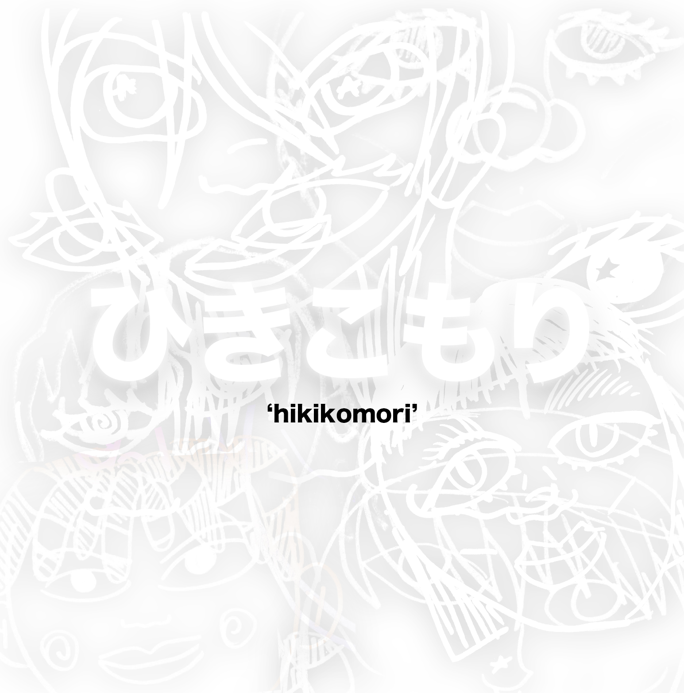

there's this japanese phrase that i stumbled across--hikikomori. it translates to "recluse" in english, and usually describes people that live in total isolation, rarely leaving their homes. in a documentary i watched about it, it showed people who lived almost entirely in dark rooms online. they weren't always like that, but usually some kind of traumatic event triggered them into isolation from the outside world. they live and often died alone. its hard to not start to feel like a hikikomori these days. under isolation, even talking to my family becomes an extreme chore.